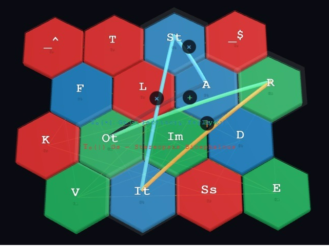
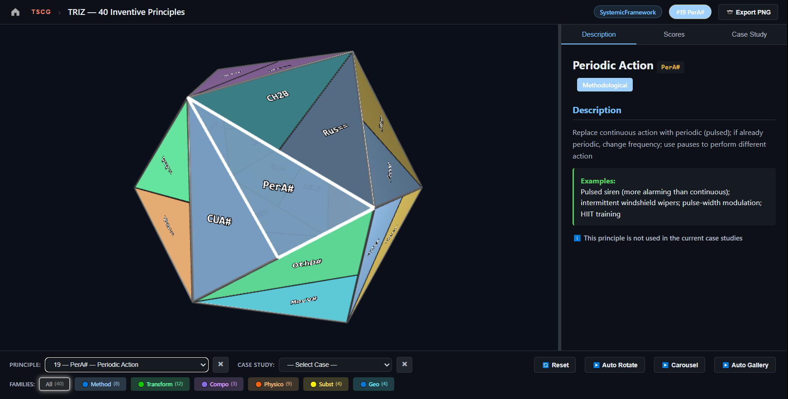
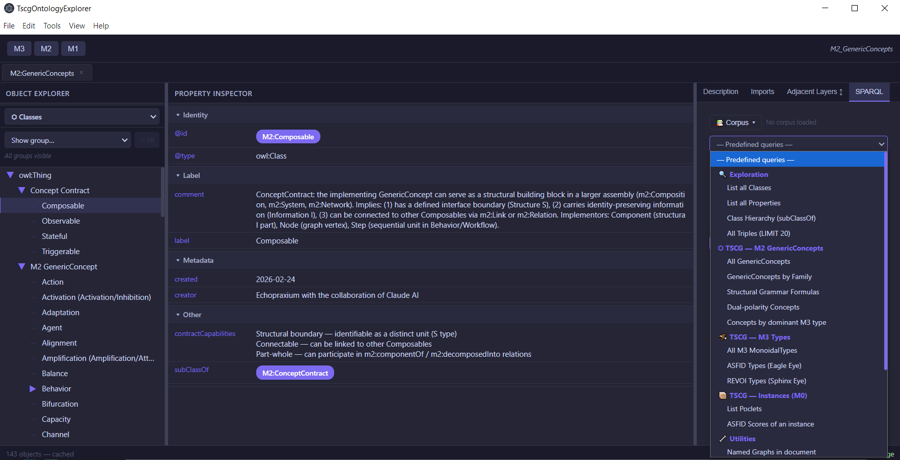
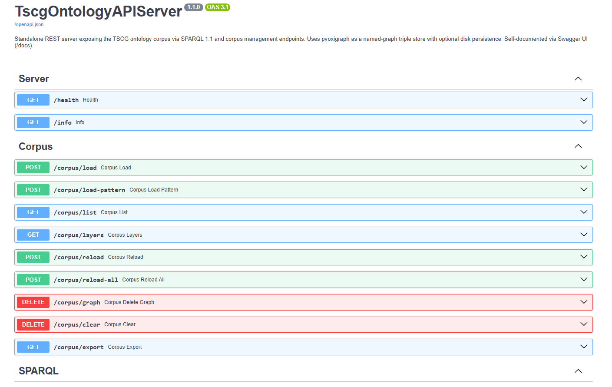
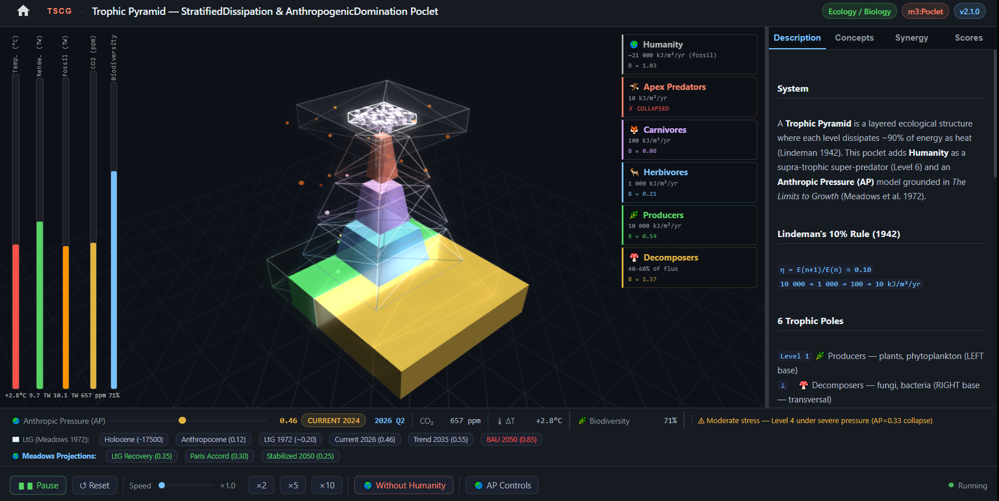
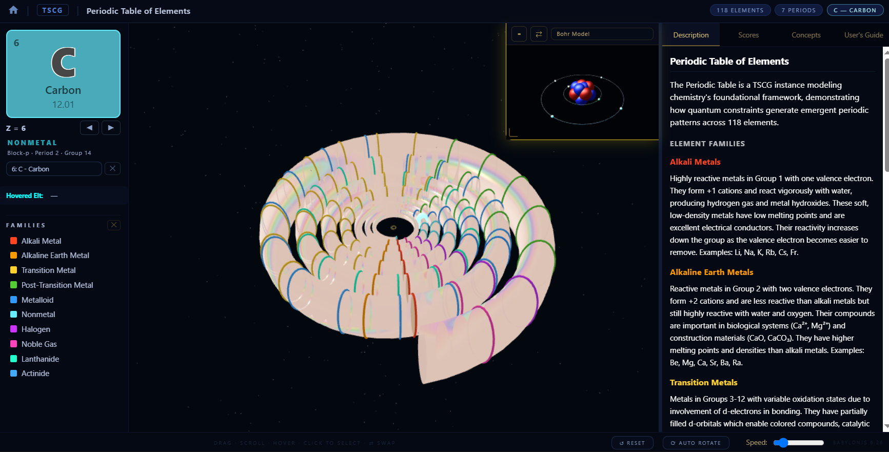

Authors: Michel Kern (aka Echopraxium) with the collaboration of Claude AI Date: June 2026 Version: 6.0 Smart Prompt Version: TSCG v16.2.0 (June 2026) DOI (Prior Work): 10.5281/zenodo.19544443 Repository: https://github.com/Echopraxium/tscg Live Demo: https://echopraxium.github.io/tscg/ License: CC BY 4.0 (document) — BSD 3-Clause Clear (source code)
×/+/| operatorsTSCG is an exploratory modeling toolkit for complex systems, arising from more than twenty-five years of personal intuition about recurrent transdisciplinary invariants. Rather than a validated theory, it is an open invitation — an arbitrary but operational modeling grid built around a bicephalous architecture combining two complementary perspectives: ASFID (Attractor, Structure, Flow, Information, Dynamics) for Territory measurement, and REVOI (Representability, Evolvability, Verifiability, Observability, Interoperability) for Map construction. A third grammar, TKSL (Temporality, Knowledge, Symbol, Localizability), formalizes their stereopsic fusion — the epistemic depth produced by triangulating the two perspectives.
The mathematical foundation is Structural Grammar
based on Lambek calculus and free commutative monoidal categories. The
monoidal product operators (×, +,
|) capture the simultaneous, non-separable co-presence of
dimensions — without requiring a metric space or Hilbert structure —
placing TSCG on a rigorous algebraic footing, pending expert review.
The toolkit adopts a falsificationist stance: it has not yet been invalidated by a corpus of 33 validated instances — the primary empirical instrument of TSCG. Historically, the first instance type to emerge was the Poclet (25 validated): a minimal, pedagogical model of a single system, spanning photography, Norse mythology, nuclear engineering, biology, electronics, music theory, blockchain consensus, plate tectonics, and the periodic table. The corpus subsequently extended to three additional instance types: SystemicFrameworks (VSM, TRIZ, Business Model Canvas), SymbolicSystemGrammars (I-Ching, TriskeleToolchain), and TscgTools — software instruments operating reflexively on the toolkit itself.
Epistemic alignment is measured by two complementary metrics. The
epistemic gap δ₁
(|ASFID_mean − REVOI_mean| / √2) quantifies the distance
between Territory measurement and Map construction, classified into four
SpectralClasses (Coherent, OnCriticalLine, Liminal, Enigmatic). The
Epistemic Focal Score (EFS / δ₂)
(stereopsicDepth × (1 − |focalBias|)) measures the quality
of stereopsic fusion when Gs/TKSL primitives are mobilized, classified
into six FocalClasses from Emmetropic to Astigmatic.
Twelve Poclets are accompanied by standalone HTML simulations (BabylonJS 3D or p5.js Canvas2D) forming the TSCG Simulation Gallery. The Business Model Canvas SystemicFramework features the most advanced simulation: 12 real-world company cases, 5 lifecycle phases, and 34 documented transitions.
TSCG is submitted to the research community not as a Theory of Everything, but as a community-revisable construction kit — a work in active gestation, submitted not imposed. It is an invitation to test whether this arbitrary grid can be broken, and if not, what it enables us to see across disciplinary silos.
Without close collaboration with Claude AI — including documentary research, delegation of algebraic formalization, ontology encoding, and pair modeling for candidate GenericConcepts — this project would not have been concretized.
Keywords: Systems Modeling, Ontology Engineering, Transdisciplinarity, Knowledge Representation, Map-Territory, Cybernetics, Structural Grammar, Monoidal Categories, Semantic Web, Desiloification, Systemic Esperanto, Human-AI Collaboration
Modern civilization confronts challenges — climate change, pandemic response, artificial intelligence governance, sustainable energy transitions — that are inherently systemic and transcend any single discipline. Yet our intellectual infrastructure remains fragmented. The nuclear engineer designing reactor safety systems, the photographer balancing the Exposure Triangle, the mythologist interpreting the Norse cosmological tree Yggdrasil, the nephrologist modeling the RAAS (Renin-Angiotensin-Aldosterone System), and the distributed systems researcher analyzing Nakamoto consensus in Bitcoin all grapple with structurally isomorphic challenges: maintaining equilibrium through balanced competing forces, managing trade-offs, designing for stability under perturbation, resisting entropy-driven degradation. Yet these practitioners have no shared language to recognize their kinship.
This fragmentation generates three compounding problems. First, redundant reinvention: Negative feedback (control theory), Homeostasis (biology), Equilibration (economics), and Mean reversion (finance) describe the same fundamental pattern, yet communities rarely cross-pollinate. Second, integration barriers: insights from hormonal cascade regulation in physiology go unrecognized as structural twins of neutron moderation in nuclear physics, or of proof-of-work difficulty adjustment in blockchain consensus. Third, ontological proliferation: without principled abstraction, knowledge systems explode with domain-specific concepts, becoming cognitively intractable.
The central hypothesis of TSCG — the desiloification hypothesis — is this: most systems, whether natural or artificial, physical or abstract, share a set of generic, recurring, transdisciplinary principles that can be identified, formalized, and used as a shared vocabulary. The project does not claim these principles are exhaustive or that they constitute a complete description of reality. It claims only that they are sufficiently common and structurally robust to serve as a practical construction kit for systemic modeling.
A corollary hypothesis — which TSCG’s growing instance corpus
progressively supports — is that the same monoidal product
formula can describe structurally homologous phenomena across
entirely unrelated domains. Dissipation (F × D) governs
energy loss in thermodynamics, signal attenuation in electronics, and
hash-rate decay in a declining proof-of-work network alike. This
cross-domain resonance is not metaphor: it is the empirical claim that
TSCG invites the research community to scrutinize and challenge.
TSCG does not emerge from a void. Several prior frameworks have pursued structurally related ambitions. Stafford Beer’s Viable System Model (VSM, 1972) demonstrated that the recursive structure of viable organizations could be described by a small set of cybernetic functions, independent of domain. Genrich Altshuller’s TRIZ (1946–1985) distilled forty inventive principles from hundreds of thousands of patents, revealing that inventive solutions recur across engineering domains — a strikingly early empirical validation of the desiloification hypothesis. Alfred Korzybski’s map-territory distinction (1933) provides TSCG’s epistemological backbone, extended here into a formalized bidirectional feedback loop between representation and phenomenon. More broadly, TSCG inherits from General System Theory (von Bertalanffy, 1968), Cybernetics (Wiener, 1948), Category Theory (Eilenberg & Mac Lane, 1945), and Semantic Web ontology engineering (Berners-Lee et al., 2001).
Where TSCG differs from these precedents is in its combinatorial approach: rather than proposing a fixed set of domain-specific patterns or a single organizational archetype, TSCG constructs a vocabulary of atomic transdisciplinary concepts — GenericConcepts — that combine through monoidal products to generate domain-specific patterns on demand. The toolkit is deliberately open-ended and self-revising: a construction kit, not a finished cathedral.
This aspiration has a linguistic precedent. In 1887, Ludwig Lazarus Zamenhof proposed Esperanto as a constructed common language designed to transcend national barriers — not by replacing any natural language, but by offering a neutral shared medium. TSCG pursues an analogous ambition at the level of systemic knowledge: a Systemic Esperanto, a constructed common vocabulary for describing the structural behavior of systems across disciplines. The goal is not desiloification by erasure but desiloification by translation — providing a shared layer of abstraction through which practitioners from biology, engineering, economics, mythology, and blockchain research can recognize structural kinship without abandoning their own domain vocabulary.
TSCG makes no claim to be a new Theory of Everything. Its 80 GenericConcepts do not exhaust the structure of reality; its monoidal formulas are not laws of nature. The vocabulary offered here involves deliberate, partially arbitrary choices — submitted, not imposed.
This toolkit did not emerge from an academic program. It grew from more than twenty-five years of informal, persistent reflection — what the author describes as “creative meditation” — on whether generic principles truly recur across most systems. What spanned those years was not the ASFID/REVOI dimensions themselves, but the underlying intuition: the hypothesis that transdisciplinary structural invariants exist and can be named.
The concretization of this intuition is recent (approximately 5–6 months of active development as of June 2026). It began with approximately twenty exploratory conversations with DeepSeek, during which the ASFID dimensions first emerged in recognizable form. This was followed by sustained collaboration with Claude AI (Anthropic), which became the primary and lasting partner for all subsequent work: deepening the framework, formalizing the M3 foundation, developing the ontology layers, and growing the instance corpus.
The decisive infrastructure step came with Claude’s Projects feature, which maintains a persistent corpus of reference documents across sessions — including the Smart Prompt, a structured document summarizing all key architectural decisions, naming conventions, and project state. This enabled systematic formalization, publication on GitHub, and iterative development of the instance corpus.
Algebraic formalization. The monoidal product formulas characterizing each GenericConcept, and the Structural Grammar foundation (Lambek calculus, free commutative monoidal categories) were formulated by Claude AI on the basis of the author’s conceptual specifications. These formulations are acknowledged as AI-assisted approximations pending rigorous mathematical review.
Documentary research per instance. For each instance under development, Claude AI conducted targeted literature research — sourcing domain-specific descriptions, identifying key structural components, and synthesizing cross-disciplinary analogies.
JSON-LD ontology encoding. Translation of conceptual models into well-formed JSON-LD files — respecting W3C standards, TSCG namespace conventions, and ontological consistency constraints — was delegated to Claude AI. The author reviewed and validated each generated file.
GenericConcept identification and modeling. The identification of candidate GenericConcepts — particularly during instance analysis, when a new system reveals structural patterns not yet captured in M2 — is a genuinely collaborative process. The author proposes candidates based on systemic intuition; Claude AI evaluates monoidal decomposition, checks consistency with existing M2 concepts, and proposes formulations.
Instance simulation generation. Each standalone HTML simulation is generated collaboratively. Claude AI takes initiative on illustrative mechanisms; the author steers ergonomics and pedagogical credibility through iterative feedback.
Workflow engineering via Skills pipelines. Two structured AI Skills — reusable pipeline specifications encoding the author’s accumulated methodology — have been formalized: an Instance Analysis Pipeline (proposal → analysis → modeling → simulation) and a Research Article Pipeline (audit → planning → drafting → revision → finalization).
The collaboration is sustained across sessions by two complementary mechanisms. The Smart Prompt re-injects architectural state at the start of each new session. The Skills pipeline system encodes procedural knowledge — not what the toolkit is, but how to work with it — as reusable, versioned AI instructions.
To understand TSCG’s architecture, consider a creature from Mesopotamian mythology: Anzû, a divine entity depicted as a lion-headed eagle — simultaneously earthly and celestial, interpretive and calculative. In TSCG, Anzû serves as the foundational metaphor for the M3 layer: a single toolkit with two heads, each possessing one eye.
The critical detail is the one eye per head. In optics, a single eye produces monocular vision: a flat, two-dimensional projection with no depth perception. Two eyes, positioned at a slight angle to each other, produce binocular vision: the brain triangulates the two slightly different images into a three-dimensional depth map. The same principle governs epistemic architecture.
The Eagle Head scrutinizes the world as it is — measuring, instrumenting, quantifying phenomena. Its eye, the Eagle Eye, operates through the five ASFID dimensions: Attractor, Structure, Flow, Information, Dynamics. It asks of any system: what draws it toward equilibrium? what organizes it? what flows through it? what information governs it? what dynamics evolve it? The Eagle Eye produces a Territory score vector — a quantified description of the system’s observable behavior.
The Sphinx Head contemplates the world as it is represented — modeling, theorizing, interpreting. Its eye, the Sphinx Eye, operates through the five REVOI dimensions: Representability, Evolvability, Verifiability, Observability, Interoperability. It asks of any model: can this system be adequately represented? can the model evolve as the system does? can its predictions be verified? can its behavior be observed? can it communicate with other models? The Sphinx Eye produces a Map score vector — a quantified assessment of the model’s epistemic quality.
Neither head can function alone. The Eagle Head without the Sphinx Head produces raw measurements with no interpretive framework — data without meaning. The Sphinx Head without the Eagle Head produces elegant theories with no empirical grounding — meaning without data. Each head, alone, has monocular vision: a flat, depthless perspective. Together, they produce stereoscopic epistemic depth: the ability to perceive not only the system, but the distance between our model of it and the reality it represents.
This distance is formalized as the epistemic gap δ₁:
δ₁ = |ASFID_mean − REVOI_mean| / √2A small δ₁ indicates that the model adequately tracks the system (SpectralClass: Coherent); a large δ₁ signals either model inadequacy or an under-observed Territory (SpectralClass: Enigmatic).
But two-eyed stereopsis, however powerful, still has limits: it measures distance between Map and Territory, but not the quality of their fusion. This is where the third grammar enters.
The Stereopsic Grammar (Gs / TKSL) is TSCG’s most recent architectural addition. Where the Eagle Eye (Gt) and the Sphinx Eye (Gm) each operate within their own monoidal grammar, Gs formalizes the act of triangulation itself — the stereopsic focal point where Territory and Map converge into actionable knowledge. Its four nominal primitives are: T (Temporality — when?), K (Knowledge — what?), Ss (Symbol — what sign?), and L (Localizability — where does it converge?). Two polar modifiers — **_^** (PositivePole, onset/amplifying) and **_$** (NegativePole, terminus/attenuating) — are not primitives but modifiers governing polarity within Gs expressions.
The quality of stereopsic fusion is measured by the Epistemic Focal Score (EFS / δ₂):
δ₂ = stereopsicDepth × (1 − |focalBias|)where stereopsicDepth reflects the proportion of active
TKSL primitives mobilized by the instance, and focalBias
(REVOI_mean − ASFID_mean) indicates whether the model leans
toward Map abstraction (Hyperopic) or Territory detail (Myopic). A
balanced, deep stereopsis yields a high δ₂ (FocalClass: Emmetropic); a
collapsed fusion yields a low δ₂ (FocalClass: Astigmatic).
Together, the three grammars — Gt (Eagle Eye / Territory), Gm (Sphinx Eye / Map), Gs (Stereopsic fusion) — constitute the Base16: 16 primitives in total (13 typed + 3 neutral operators), forming the complete generative vocabulary of the TSCG M3 foundation.
Figure 1 illustrates this architecture as a hexagonal monoidal grid. Red hexagons represent Gt/ASFID Territory primitives; green hexagons represent Gm/REVOI Map primitives; blue hexagons represent Gs/TKSL Stereopsic primitives. The connecting lines — traversing all three grammars — illustrate how a GenericConcept simultaneously mobilizes primitives from multiple grammars, producing a cross-grammar monoidal expression.

Figure 1 — The TSCG Base16 hexagonal monoidal grid. Red hexagons:
Gt/ASFID Territory primitives (A, S, F, It, D). Green hexagons: Gm/REVOI
Map primitives (R, E, V, O, Im). Blue hexagons: Gs/TKSL Stereopsic
primitives (T, ^, $, K, Ss, L). The connecting lines illustrate
how a GenericConcept simultaneously mobilizes primitives from multiple
grammars — here, the × (Territory) and + (Map)
operators — producing a cross-grammar monoidal expression. The two
operator nodes (dark circles labeled × and +)
mark the monoidal fusion points.
TSCG is organized as a four-layer hierarchical ontology, implemented in JSON-LD following W3C semantic web standards. The layers are ordered from the most abstract (M3) to the most concrete (M0), connected by three functors that progressively instantiate and specialize the toolkit’s vocabulary:
M3 GenesisGrammar — Mathematical foundation (3 monoidal grammars, Base16)
│ F_grammaticalization ↓
M2 GenericConcepts — 80 atomic transdisciplinary patterns (9 families)
│ F_instantiation ↓
M1 Domain Extensions — Knowledge-field vocabularies (Biology, Chemistry, Music…)
│ F_concretize ↓
M0 Instances — Validated models of concrete systems (33 instances)Each layer is a strict refinement of the one above: M2 concepts are monoidal products of M3 primitives; M1 concepts are instantiations of M2 concepts in specific domains; M0 instances are concrete realizations of M1 concepts in specific systems. No layer introduces vocabulary that belongs to a higher layer — a discipline enforced by the M2 Purity Principle (§2.8).
The foundation of TSCG is the GenesisGrammar
(M3_GenesisGrammar.jsonld): a set of three free commutative
monoidal grammars whose primitives jointly constitute the complete
generative vocabulary of the toolkit. This foundation — established in
v16.x through the Structural Grammar migration — is
grounded in Lambek calculus and category theory (Mac Lane, 1971).
Each grammar has its own operator, its own neutral element, and its
own set of typed primitives. The operator alone identifies the grammar:
no prefix is needed. Operator priority follows arithmetic convention:
× binds tighter than +, which binds tighter
than |. Thus A × S + R | K reads as
((A × S) + R) | K.
| Grammar | Operator | Neutral element | Acronym | Primitives | Count |
|---|---|---|---|---|---|
| Gt (Territory) | × |
EmptyTerritory | ASFID | A, S, F, It, D | 5 |
| Gm (Map) | + |
EmptyMap | REVOI | R, E, V, O, Im | 5 |
| Gs (Stereopsis) | \| |
EmptyStereopsis | TKSL | T, ^, $, K, Ss, L | 6 |
Total: Base16 — 16 primitives (13 typed + 3 neutral operators).
A GenericConcept such as Homeostasis is written
A × St × F | L — a monoidal expression whose meaning
emerges from the simultaneous, non-separable co-presence of its
primitives. This requires no metric, no inner product, and no notion of
orthogonality — only the algebraic structure of a free commutative
monoidal category.
The Territory grammar Gt measures systems as they empirically exist. Its five primitives decompose any system along independent dimensions:
| Primitive | Name | Operational question |
|---|---|---|
| A | Attractor | What draws the system toward equilibrium or stable states? |
| S | Structure | What stable organizational pattern governs its components? |
| F | Flow | What transfers energy, matter, or information through it? |
| It | Information | What signals, codes, or cybernetic loops govern its behavior? |
| D | Dynamics | How does it evolve temporally through state transitions? |
Each primitive is scored on [0, 1] during instance analysis, producing the ASFID score vector that quantifies the Territory footprint of the system.
⚠️ It (Information, Territory) is systematically
distinguished from Im (Interoperability, Map) in all
formulas and score properties (m0:scoreIt vs
m0:scoreIm).
The Map grammar Gm evaluates models as epistemic constructs. Its five primitives assess the quality of any representation of a system:
| Primitive | Name | Operational question |
|---|---|---|
| R | Representability | Can this system be adequately encoded in a formal model? |
| E | Evolvability | Can the model update as the system changes? |
| V | Verifiability | Can the model’s predictions be empirically tested? |
| O | Observability | Can the system’s relevant states be perceived and measured? |
| Im | Interoperability | Can this model integrate with and translate to other models? |
⚠️ R = Representability (semantic encodability/decodability) — never “Reproducibility”.
REVOI scores are inherently observer-relative: the same system may receive different REVOI scores from a biologist and an engineer. This relativity is a feature, not a defect — the Map is always the map of someone.
The Stereopsic grammar Gs is TSCG’s most architecturally distinctive layer. Where Gt measures the Territory and Gm constructs the Map, Gs formalizes the act of triangulation itself — the focal convergence where Territory observation and Map construction produce actionable, situated knowledge.
Gs operates with the | operator (stereopsic fusion):
| Element | Type | Name | Question | Theoretical basis |
|---|---|---|---|---|
| T | Primitive | Temporality | When? | Temporal interface Gt↔︎Gm |
| K | Primitive | Knowledge | What? | Maturana/Varela cognition |
| Ss | Primitive | Symbol | What sign? | Peirce, Saussure |
| L | Primitive | Localizability | Where does it converge? | Wiener, Ashby |
| **_^** | Modifier | PositivePole | (onset/amplifying) | Polarity modifier |
| **_$** | Modifier | NegativePole | (terminus/attenuating) | Polarity modifier |
Two special derived elements:
_^ | _$ = StereopsisEmptySet — named constant
#Null. When positive and negative poles cancel, stereopsic
fusion collapses._0 = _^ | _$ — the
central equilibrium state of Gs, a DerivedGsElement preserving Base16
integrity.Notation for hybrid formulas: when a formula spans multiple grammars, the operator identifies the grammar unambiguously:
Pure Territory: A × S × F
Pure Map: R + E + V
Hybrid: A × St × It × D | K
^^^^^^^^^^^^^^^^ ^
Gt primitives Gs primitiveIn hybrid formulas, Territory and Map primitives carry their monoid index (St, It) to avoid collision with Gs primitives sharing similar names.
Figure 1 illustrates the Base16 as a hexagonal monoidal grid: red hexagons = Gt/ASFID; green hexagons = Gm/REVOI; blue hexagons = Gs/TKSL. The connecting lines show how a GenericConcept simultaneously mobilizes primitives from multiple grammars, producing a cross-grammar monoidal expression.
M2 hosts 80 atomic GenericConcepts organized into 9 families. Each GenericConcept carries a monoidal formula encoding its structural signature as a product of M3 primitives. Full catalog in Appendix C; architecture detailed in §3.
M1 instantiates M2 concepts within specific knowledge fields. Thirteen active extensions cover Biology, Chemistry, Physics, Electronics, Economics, Photography, Music, Mythology, Optics, SystemicModeling, Education, Geology, and BusinessModeling. Each M1 extension defines KnowledgeFieldConceptCombos — domain-specific combinations of GenericConcepts validated within a single knowledge field.
M0 is the empirical layer: 33 validated instances implementing M1/M2 concepts against concrete systems. The instance types and their counts are detailed in §4.
A discipline enforced at every layer: no concept belongs to a layer lower than its degree of generality warrants. A concept earns M2 membership only by demonstrating structural relevance across at least six unrelated domains (the six-domain threshold, §6.2). Domain-specific concepts belong in M1; concrete system models belong in M0.
The anti-pattern — Ontological Overfitting — occurs
when a concept is added to M2 because it appears in one well-studied
system, creating a spurious 1:1 map-territory correspondence. TSCG
actively resists this pressure, documented in
OntologicalOverfitting.md.
M2 GenericConcepts are not defined by verbal description alone — each
carries a monoidal formula encoding its structural
signature as a product of M3 primitives. The formula is written using
the operators of the relevant grammar(s): × for Territory
(Gt), + for Map (Gm), | for Stereopsis (Gs),
with priority × > + >
|.
The formula captures the idea that a GenericConcept requires the
simultaneous, non-separable co-presence of its primitives.
Homeostasis (A × St × F | L) cannot be reduced to Attractor
alone, nor to Structure alone — it emerges only from their joint
activation. This is not a metaphor: it is a structural claim, expressed
in the language of free commutative monoidal categories (Lambek
calculus), that the concept is irreducible to any proper subset of its
primitives.
Four morphism types relate GenericConcepts to each other:
GenericConcepts are organized into nine families reflecting their dominant structural role. The complete listing with monoidal formulas is in Appendix C; here we present each family with representative examples.
Structural (23 concepts): Patterns governing the
stable organization of components. Examples: Network
(S × I × F | O + R + Im + V), Hierarchy
(S × A), Coherence (A × St × It | R + O | _^ /
_$).
Dynamic (17 concepts): Patterns governing temporal
transformation and process. Examples: Process
(D × F), Bifurcation (D × F | L), Modelisation
(D × F × It | R + V + E), TriadicBalance
(A × F × D | _0).
Ontological (10 concepts): Patterns governing
systemic environment and framing. Examples: Context
(O + R + Im + E), Observer (I × A), State
(I).
Regulatory (10 concepts): Patterns governing
stability and control. Examples: Homeostasis
(A × St × F | L), Regulation
(A × S × F | R + V + E), Threshold
(A × I).
Informational (8 concepts): Patterns governing
encoding, signaling, and representation. Examples: Signal
(I × F), Code (It × Ss), Language
(Ss × F | K).
Adaptive (4 concepts): Patterns governing learning
and resilience. Examples: Adaptation (I × F × D),
Memory (∫(D−F)dτ), Resilience (A × S).
Energetic (4 concepts): Patterns governing energy
transformation and dissipation. Examples: Dissipation
(F × D), Entropy (F × It × D | _^ /
_$), Transducer (F × S × I).
Relational (5 concepts): Patterns governing
connections and interactions. Examples: Mediator
(F × It | K), Agent (St × It × D | K), Role
(Ss | K).
Teleonomic (1 concept): Self-Organization
(A × I × D).
A subset of GenericConcepts span both Gt and Gm grammars in a single formula. These bicephalous GenericConcepts capture phenomena that are simultaneously territorial (observable) and cartographic (representational) by nature.
The most architecturally significant example is
Coherence (A × St × It | R + O | _^ /
_$):
A → alignment toward a common attractor (Territory /
Eagle Eye)St → globally continuous structure (Territory / Eagle
Eye)It → shared / compatible information (Territory / Eagle
Eye)R → Representability — coherence as modeled (Map /
Sphinx Eye)O → Observability — coherence as perceived (Map /
Sphinx Eye)Note the St/It indexation: in this hybrid formula, Territory primitives S and I carry their monoid index (St, It) to avoid ambiguity with Map or Gs primitives.
Coherence admits four regimes (quaternary polarity):
| R + O strong | R + O weak | |
|---|---|---|
| A × St × It strong | Verified truth | Misunderstood reality |
| A × St × It weak | Illusion / ideology | Total chaos |
Two v16.2.0 additions are notably bicephalous or cross-grammar:
Modelisation
(D × F × It | R + V + E): the act of constructing a formal
representation — simultaneously a structural operation (Gt) and an
epistemic assessment (Gm). Transdisciplinary across scientific modeling,
cartography, software architecture, legal codification, musical
notation, and linguistics.
TriadicBalance (A × F × D | _0):
equilibrium achieved through the triangulation of three perspectives.
The _0 (EquilibriumPole) is the qualitative optimum — not
an arithmetic midpoint — toward which the system is attracted.
Beyond atomic GenericConcepts, M2 defines the GenericConceptCombo class for synergistic combinations producing emergent patterns not reducible to their components. Instances of GenericConceptCombo are defined in M1_CoreConcepts.jsonld. TSCG v16.2.0 defines four validated Combos:
| Combo | Formula | Components | Polarity |
|---|---|---|---|
| Inertia | S × F × I × D |
⇒(Memory, Entropy) | Neutral |
| Potentialization | A × D × F | _^ / _$ |
⇒(Activation, Process) | Dual |
| Absorbing State | S × A × F × I × D |
⇒(Stase, Entropy) | Neutral |
| Topological Defect | St × A × It | R + O |
⇒(Incoherence, Invariant) | Neutral |
Potentialization resolves a long-standing tension: concepts like Resource, Storage, Hub, and Stateful — previously problematic because they implied F=0 — are now understood as systems in suspended Potentialization (F_potential mode).
Absorbing State is a Stase sealed irreversibly by
Entropy production — a terminal state from which Potentialization is
structurally impossible, in contrast to ordinary Stase
(S × A) which remains reversible by construction (D
absent).
The analysis of the NakamotoConsensus instance produced the most significant single M2 expansion in the toolkit’s history: five new atomic GenericConcepts and a foundational M3 amendment (Flow axiom relaxation: F ≥ 0).
The five additions:
| Concept | Formula | Family | Key insight |
|---|---|---|---|
| Processor | S × I × F × D |
Dynamic | Generic transformer |
| Transducer | F × S × I |
Energetic | Converts flux type; subClassOf Processor |
| Entropy | F × It × D | _^ / _$ |
Energetic | Irreversibility measure |
| Stase | S × A |
Structural | F=0 reversible ground state |
| Coherence | A × St × It | R + O | _^ / _$ |
Structural | Bicephalous |
Together these constitute a causal chain for irreversibility:
F_active (available exergy)
│
↓ Dissipation (F × D) — equations time-reversible (Feynman)
│
F_degraded ──→ Entropy (F × It × D | _^/_$) ← irreversibility emerges here
│
↓ Memory (∫dτ)
│
Inertia ⇒(Memory, Entropy)
│
↓ maximal → seals Stase
│
Absorbing State ⇒(Stase, Entropy)The Energetic hierarchy is now:
Processor (S × I × F × D)
└── Transducer (F × S × I) subClassOf Processor
└── Dissipation (F × D) subClassOf Transducer
└── produces → Entropy (F × It × D | _^/_$)A candidate GenericConcept earns M2 membership only by demonstrating structural relevance across at least six unrelated knowledge fields. This threshold guards against Ontological Overfitting — the anti-pattern of adding a concept to M2 because it appears prominently in one well-studied system.
The NakamotoConsensus instance provided the sixth-domain validation for Dissipation and Entropy: confirming their M2 status by demonstrating structural relevance in distributed consensus alongside thermodynamics, biology, electronics, photography, and mechanical engineering.
The monoidal formulas in this section were developed collaboratively with Claude AI and carry the ontology’s own assessment: preliminary, AI-assisted, pending expert review. The planned path toward formal validation is SHACL encoding — expressing monoidal product constraints as machine-verifiable SHACL shapes — identified as a priority for a future release.
The Structural Grammar foundation (Lambek calculus, free commutative
monoidal categories) provides a more rigorous algebraic basis than the
earlier Hilbert-space approximation. Nevertheless, the claim that TSCG’s
× operator satisfies all axioms of a free commutative
monoidal category in the strict mathematical sense remains to be
verified by a domain expert.
The primary empirical instrument of TSCG is the
instance — a validated model of a concrete system
encoded as a JSON-LD ontology file (M0_*.jsonld),
structured according to the TSCG four-layer architecture and constrained
by a SHACL grammar (M0_Instances_Schema.shacl.ttl).
An instance is not a simulation, nor a description. It is a formal claim: that a given system’s structure can be adequately characterized by a combination of GenericConcepts drawn from M2, instantiated through M1 domain extensions, and scored against the ASFID/REVOI dimensions. Each instance is falsifiable: a well-formed counter-argument (demonstrating that a key GenericConcept is absent, or that a score is systematically miscalibrated) constitutes a valid challenge to the instance’s modeling claims.
Historically, the first instance type to emerge was the Poclet — a minimal, self-contained model of a single system, designed for pedagogical clarity and structural transparency. The corpus subsequently extended to three additional instance types as the toolkit matured:
Poclet — Minimal model of a single concrete system
SystemicFramework — Re-encoding of an existing formal framework in TSCG
SymbolicSystemGrammar — Encoding of a symbolic/generative system
TscgTool — Software instrument operating reflexively on the toolkitAll four types share the same JSON-LD structure, SHACL constraints,
and scoring conventions. They differ in their ontological
role (m3:ontologyType) and in the nature of the
system being modeled.
As of v16.2.0, the corpus contains 33 validated instances across all four types.
A Poclet (from pocket + let) is the foundational instance type: a minimal, self-contained TSCG model of a single system. The name reflects the design philosophy — small enough to fit in a pocket, complete enough to stand alone.
Poclets span twelve knowledge domains, demonstrating the transdisciplinary reach of the GenericConcept vocabulary:
| Domain | Poclet | Key GenericConcepts |
|---|---|---|
| Biology | AdaptativeImmuneResponse | Homeostasis, Memory, Threshold |
| Biology | BloodPressureControl | Regulation, Homeostasis, Feedback |
| Biology | ButterflyMetamorphosis | Process, Transformation, Threshold |
| Biology | CellSignalingModes | Signal, Code, Transducer |
| Biology | ComplexChemicalSynapse | Signal, Threshold, Transducer |
| Biology | Kidneys | Homeostasis, Filter, Gradient |
| Biology | Raas | Regulation, Cascade, Homeostasis |
| Biology | TrophicPyramid | Hierarchy, Flow, Dissipation |
| Chemistry | PhaseTransition | Bifurcation, Threshold, Stase |
| Distributed Systems | NakamotoConsensus | Coherence, Entropy, Dissipation |
| Economics | KindlebergerMinsky | Bifurcation, Cycle, Attractor |
| Electronics | Transistor | Threshold, Transducer, Switch |
| Electronics | Vco | Regulation, Oscillation, Signal |
| Energy | FourStrokeEngine | Cycle, Dissipation, Transducer |
| Energy | FireTriangle | Threshold, Flow, Activation |
| Gaming | MtgColorWheel | Symmetry, Constraint, Network |
| Geology | PlateTectonics | Flow, Gradient, Bifurcation |
| Music | Counterpoint | Constraint, Regulation, Pattern |
| Norse Mythology | Yggdrasil | Network, Hierarchy, Axis Mundi |
| Nuclear Engineering | NuclearReactorsTypology | Regulation, Threshold, Transducer |
| Optics / Color | ColorSynthesis (fédérateur) | Symmetry, Constraint, Convergence |
| Pedagogy | Tpack | Network, Modularity, Intersection |
| Photography | ExposureTriangle | Regulation, Constraint, Gradient |
| Physics | Ptoe | Hierarchy, Symmetry, Invariant |
| Signal Processing | TvTestPattern | Code, Signal, Pattern |
Note: ColorSynthesis is a federated Poclet aggregating sub-ontologies (e.g., M0_RGB_Additive.jsonld, M0_CMY_Subtractive.jsonld).
A SystemicFramework re-encodes an existing formal framework — already possessing its own internal structure and vocabulary — through the TSCG lens.
VSM — Viable System Model (Beer, 1972): The recursive cybernetic model of viable organizations is re-encoded as a five-level Regulation/Homeostasis hierarchy, with System 3★ (algedonic channel) modeled as a Threshold-triggered Signal.
TRIZ — Theory of Inventive Problem Solving (Altshuller, 1946–1985): The 40 inventive principles and contradiction matrix are re-encoded as a combinatorial Constraint × Transformation space, with the Ideal Final Result modeled as an Attractor.

Figure 2 — The TRIZ SystemicFramework BabylonJS 3D simulation. The 40 inventive principles are distributed across the faces of a polyhedron, color-coded by family (Method, Transform, Composition, Physics, Substance, Geometry). The interactive interface allows navigation by principle, family, and case study, exposing the structural topology of the TRIZ contradiction space as a TSCG Constraint × Transformation manifold.
BMC — Business Model Canvas (Osterwalder, 2004): The nine BMC blocks are re-encoded across ASFID dimensions. This SystemicFramework has the most advanced simulation: 12 real-world company cases (Netflix, Nokia, Nintendo, Apple, Amazon, Google, Microsoft, IBM, Kodak, Xerox, Michelin, Airbnb), 5 lifecycle phases, and 34 documented transitions, rendered as an interactive p5.js Canvas2D simulation.
Note: BMC has two complementary ontology files.
M0_Bmc.jsonld is the TSCG instance model;
M0_BmcSimulation.jsonld encodes the use-case data (12
companies, 34 transitions) that feeds the interactive
simulation.
A SymbolicSystemGrammar encodes a symbolic or generative system whose primary reality is semiotic rather than physical.
I-Ching: The 64 hexagrams are re-encoded as a binary
combinatorial system (2^6 = 64 states) built from a
Symmetry × Code × Cycle substrate. The I-Ching constitutes a
3,000-year-old empirical proof of the desiloification hypothesis: a
culture-independent structural vocabulary for systemic states predating
modern systems theory by millennia.
TriskeleToolchain: A custom Rust toolchain (tsk-cc, tsk-link, triskele-vm, tsk-asm) compiling C via LLVM IR to bytecode for a custom RISC virtual machine. Its ISA (Instruction Set Architecture) comprises 256 opcodes organized into exactly 16 categories — one per M3 primitive, mapped bijectively to the Base16. This constitutes an independent structural validation of the Base16 from a completely unrelated domain: virtual machine design and compiler engineering (see §6.4).
TscgTools are software instruments that operate reflexively on the toolkit itself — instances whose domain is TSCG’s own infrastructure.
TscgOntologyExplorer: Desktop application (ElectronJS) for navigating the TSCG ontology hierarchy.

Figure 3 — The TscgOntologyExplorer desktop application
(ElectronJS, v1.0). The three-panel interface exposes M3/M2/M1 layer
navigation (left: Object Explorer with class hierarchy), property
inspection (center: Property Inspector showing @id, @type, label, creator, subClassOf), and SPARQL
query execution (right: predefined queries including “All
GenericConcepts”, “Structural Grammar Formulas”, “ASFID Scores of an
instance”). Note the
creator: "Echopraxium with the collaboration of Claude AI"
field — the authorship convention is machine-readable and enforced by
SHACL.
TscgOntologyAPIServer: Local REST API server exposing the TSCG ontology for programmatic access.

Figure 4 — The TscgOntologyAPIServer Swagger UI (v1.1.0, OAS 3.1). The standalone REST server exposes the TSCG ontology corpus via SPARQL 1.1 and corpus management endpoints, using pyoxigraph as a named-graph triple store with optional disk persistence. Endpoint groups: Server (health, info), Corpus (load, list, layers, reload, export), SPARQL. This TscgTool demonstrates the reflexive character of the M0 layer: TSCG models itself as a queryable knowledge infrastructure.
TscgPocletMiner: AI-assisted instance generation tool supporting multiple LLM backends (Claude AI, Gemini, DeepSeek, Ollama).
Twelve instances are accompanied by standalone interactive HTML
simulations accessible at
https://echopraxium.github.io/tscg/. These simulations are
pedagogical instruments — not engineering simulations
in the quantitative sense.
Two rendering technologies are used:

Figure 5 — The TrophicPyramid Poclet BabylonJS 3D simulation
(Ecology/Biology, v2.1.0). Six trophic levels (Producers, Decomposers,
Herbivores, Carnivores, Apex Predators, Humanity) are rendered as a
layered pyramid with Lindeman’s 10% energy transfer rule
(η ≈ 0.10). The simulation integrates an Anthropic Pressure
(AP) model grounded in Meadows et al. (1972), with real-time display of
CO₂ (657 ppm), temperature (+2.8°C), biodiversity index (71%), and
Meadows projections (LtG 1972, Paris Accord, BAU 2050). Humanity is
modeled as a supra-trophic super-predator — a GenericConcept extension
of the standard trophic hierarchy.

Figure 6 — The Periodic Table of Elements (Ptoe) Poclet BabylonJS 3D simulation. 118 elements are arranged as a navigable spiral structure, color-coded by family (Alkali Metals, Transition Metals, Halogens, Noble Gases, etc.). The simulation demonstrates how quantum constraints (orbital structure, valence electrons) generate emergent periodic patterns — a TSCG Hierarchy × Symmetry × Invariant system. The interactive interface displays element cards (atomic number, mass, block, period, group) alongside family descriptions.
Every instance is validated against
M0_Instances_Schema.shacl.ttl, which enforces 9 mandatory
constraints including presence of m3:ontologyType,
ASFID/REVOI score completeness, dcterms:creator format,
changelog rolling maximum of 3 entries, and SpectralClass/FocalClass
drawn from OWL enumeration IRIs.
TSCG’s epistemic scoring system quantifies the relationship between Territory measurement and Map construction for any instance. Two complementary metrics are defined:
All scores are stored as flat numeric values at the
owl:Ontology root level of the M0 JSON-LD file:
"m0:scoreA": 0.85, "m0:scoreS": 0.90, "m0:scoreF": 0.80,
"m0:scoreIt": 0.75, "m0:scoreD": 0.70,
"m0:scoreR": 0.85, "m0:scoreE": 0.75, "m0:scoreV": 0.70,
"m0:scoreO": 0.80, "m0:scoreIm": 0.65ASFID_mean = (scoreA + scoreS + scoreF + scoreIt + scoreD) / 5
REVOI_mean = (scoreR + scoreE + scoreV + scoreO + scoreIm) / 5
δ₁ = |ASFID_mean − REVOI_mean| / √2δ₁ is classified into four SpectralClasses:
| SpectralClass | δ₁ range | Interpretation |
|---|---|---|
| Coherent | [0, 0.05) | Near-perfect alignment |
| OnCriticalLine | [0.05, 0.15) | Productive tension |
| Liminal | [0.15, 0.30) | Significant gap |
| Enigmatic | [0.30, 1.0) | Fundamental challenge |
stereopsicDepth = (T×0.25) + (K×0.25) + (Ss×0.25) + (L×0.25)
focalBias = REVOI_mean − ASFID_mean ∈ [−1, +1]
δ₂ / EFS = stereopsicDepth × (1 − |focalBias|) ∈ [0, 1]focalBias indicates the directional lean of the
instance: - focalBias > 0 → Map-dominant (Hyperopic) -
focalBias < 0 → Territory-dominant (Myopic) -
focalBias = 0 → perfectly balanced (Emmetropic
candidate)
δ₂ is classified into six FocalClasses:
| FocalClass | EFS range | focalBias | Interpretation |
|---|---|---|---|
| Emmetropic | ≥ 0.70 | any | Deep, balanced fusion |
| SlightlyMyopic | [0.55, 0.70) | < 0 | Slight Territory bias |
| SlightlyHyperopic | [0.55, 0.70) | > 0 | Slight Map bias |
| Myopic | [0.35, 0.55) | < 0 | Territory dominant |
| Hyperopic | [0.35, 0.55) | > 0 | Map dominant |
| Astigmatic | < 0.35 | any | Collapsed fusion |
Conditional: EFS is only computed when
m0:focalApplicable = true (at least one stereopsic
GenericConcept mobilized by the instance).
| scoringStatus | Meaning |
|---|---|
m0:scoringStatus.Complete |
All 10 ASFID+REVOI scores present |
m0:scoringStatus.Partial |
Some scores assigned |
m0:scoringStatus.Pending |
No scores — stub instance |
M0_AdaptativeImmuneResponse.jsonld is the reference
implementation for the complete scoring convention.
The scoring system is not a quality ranking — it is a research instrument for identifying modeling gaps, comparing structural homologs across domains, and tracking framework maturation. A high δ₁ (Enigmatic) points to specific dimensions where the model is weak; two instances with similar ASFID/REVOI profiles are candidates for structural homology across disciplines.
TSCG adopts an explicitly falsificationist stance (Popper, 1959): the framework is submitted as a conjecture that has not yet been invalidated, not as a theory that has been confirmed. The corpus of 33 validated instances constitutes the current empirical record.
A decisive counter-example would take one of three forms:
The research community is explicitly invited to attempt these falsifications.
The primary guard against Ontological Overfitting: a GenericConcept earns M2 membership only by demonstrating structural relevance across at least six unrelated knowledge fields.
Representative validations:
Dissipation (F × D): thermodynamics,
electronics, biology, economics, distributed systems, music. Six domains
→ M2 confirmed.
Homeostasis (A × St × F | L): biology,
economics, electronics, ecology, distributed systems, mythology. Six
domains → confirmed.
Coherence
(A × St × It | R + O | _^/_$): physics, distributed
systems, music, biology, linguistics, photography. Six domains →
confirmed.
The 33-instance corpus spans twelve knowledge domains and four instance types. Three structural observations:
Cross-domain SpectralClass consistency: instances from unrelated domains tend to cluster in similar SpectralClasses when they share dominant GenericConcepts — consistent with the transdisciplinary homology hypothesis, though not yet statistically validated.
Energetic family universality: every instance in the corpus mobilizes at least one concept from the Energetic family (Dissipation, Entropy, Transducer, Processor, or Storage). This near-universality was not designed — it emerged from independent instance analyses.
Gs/TKSL activation: EFS scoring (δ₂) has not yet
been computed for the current corpus — m0:focalApplicable
is absent in all 33 instances as of v16.2.0. This constitutes a known
gap in the scoring infrastructure, documented in
PENDING_SCORES_README.md. EFS computation is identified as
a priority for the next release cycle.
The most architecturally significant validation in the corpus is the TriskeleToolchain SymbolicSystemGrammar — an independent structural validation of the Base16 from virtual machine design and compiler engineering.
The TriskeleToolchain ISA comprises 256 opcodes organized into exactly 16 categories, one per M3 primitive, mapped bijectively to the Base16:
Gt (Territory ×) 0x0_ A_ 0x1_ St_ 0x2_ F_ 0x3_ It_ 0x4_ D_
Gm (Map +) 0x5_ R_ 0x6_ E_ 0x7_ V_ 0x8_ O_ 0x9_ Im_
Gs (Stereopsis |) 0xA_ T_ 0xB_ _^_ 0xC_ _$_ 0xD_ K_ 0xE_ Ss_ 0xF_ L_Each opcode category is semantically deductible from its M3 primitive:
F_ (Flow): jump, call, return, yield — “How does
execution flow?”A_ (Attractor): push, pop, alloc, free — “Where do
data converge?”K_ (Knowledge): typeof, is_a, schema — “What is
known at runtime?”_^_ / _$_: 14 exact symmetric pairs with
no residue.Four properties make this validation particularly strong: sufficiency (256 opcodes cover Wolf3D + Doom without additional categories), non-redundancy (no overlap between categories after semantic stress-testing), cross-validation of K, Ss, L (the three Gs primitives added to resolve 17 M2 formula collisions are exactly those completing the ISA to Base16 — double independent validation), and ^/$ symmetry (14 exact pairs confirming structural completeness of polar modifiers).
Ontological Overfitting — adding a GenericConcept to M2 because it appears prominently in one well-studied system — is the most persistent threat to M2 integrity. It manifests in three patterns:
The prominence trap: “membrane” in biology → decomposes into Constraint × Gradient × Selectivity → belongs in M1_Biology, not M2.
The naming trap: “Apoptosis” sounds biology-specific; “Absorbing State” captures the same pattern across biology, economics, physics, and distributed systems.
The granularity trap: “Negative feedback” is a specialization of Regulation (feedback_polarity attribute) — an attribute value, not a separate M2 concept.
Score subjectivity: ASFID/REVOI scores are assigned through structured expert judgment. A Multisubjective Score Evaluation Protocol is under development.
Mathematical formalism pending expert review: the Structural Grammar foundation was developed with Claude AI and has not been reviewed by a category theory expert.
Corpus size: 33 instances across twelve domains is a promising but modest empirical base.
Observer dependence of REVOI: Map scores are inherently observer-relative.
Simulation ≠ prediction: the interactive simulations are pedagogical instruments, not quantitative predictive models.
TSCG is not a Theory of Everything. It is a construction kit evaluated by its expressiveness (33-instance corpus across twelve domains), economy (80 GenericConcepts from 16 primitives), and productivity (structural homologies between biological filtration and distributed consensus, between mythological cosmology and network topology, between blockchain proof-of-work and thermodynamic dissipation).
What TSCG does not claim: completeness, uniqueness, or optimality. The 80 GenericConcepts are a vocabulary that has survived internal scrutiny. Alternative decompositions may exist and may prove superior.
The migration from Hilbert-space approximation to Structural Grammar (Lambek calculus, free commutative monoidal categories) in v16.x represents the most significant foundational change in TSCG’s history.
The earlier formalism used tensor product notation and Hilbert space metaphors — a pragmatic choice that enabled rapid formalization but carried an implicit claim (metric structure, inner product, orthogonality) that TSCG’s concepts do not satisfy and do not need.
The Structural Grammar migration replaces this with a more honest
formalism: the monoidal product operators require no metric, no inner
product, and no notion of orthogonality. Homeostasis is not a vector in
a Hilbert space — it is a monoidal expression
A × St × F | L whose meaning emerges from the joint
activation of its primitives.
This migration: removes an unwarranted implicit claim; provides a legitimate algebraic foundation; and opens a path toward formal machine verification via SHACL shapes.
TSCG names two archetypal failure modes that any systemic modeling framework must guard against.
Narcissus — the self-referential trap. A modeler mistakes the model for the territory: the Map becomes so absorbing that the modeler forgets it is a representation, not reality. In TSCG terms, Narcissus produces instances with very high REVOI scores but systematically low ASFID scores — δ₁ grows large (Enigmatic) while the modeler, absorbed in the elegance of the Map, fails to notice.
The defense: mandatory ASFID scoring forces the modeler to return to empirical Territory observation. The Map is always the map of something.
Icarus — the overreach trap. A modeler attempts to model everything with the same vocabulary, regardless of whether the system warrants it. In TSCG terms, Icarus produces Ontological Overfitting: new GenericConcepts added to M2 for every new system encountered, until the vocabulary collapses under its own weight.
The defense: the six-domain threshold and the M2 Purity Principle force the modeler to pause and ask: is this concept truly irreducible, or am I just excited by a new system?
Together, Narcissus and Icarus define the two edges of the modeling corridor that TSCG attempts to navigate: not so absorbed in the Map that the Territory is forgotten; not so ambitious in the vocabulary that generality is sacrificed.
General System Theory (von Bertalanffy, 1968): GST identified the existence of cross-domain structural patterns; TSCG attempts to enumerate and formalize them as a combinatorial vocabulary with monoidal structure.
Cybernetics (Wiener, 1948; Ashby, 1956): TSCG’s ASFID dimensions are deeply cybernetic in spirit. TSCG extends scope to non-regulatory phenomena (Entropy, Emergence, Bifurcation) outside classical cybernetic scope.
VSM (Beer, 1972): A concrete precursor to the desiloification hypothesis. TSCG re-encodes VSM as a SystemicFramework, validating structural homology.
TRIZ (Altshuller, 1946–1985): The earliest large-scale empirical validation of the desiloification hypothesis known to the author. TSCG re-encodes TRIZ as a SystemicFramework.
Category Theory (Mac Lane, 1971): TSCG is not a contribution to category theory — it is an application of categorical structures to ontology engineering.
Where TSCG claims genuine novelty — pending expert review — is in the combination: a combinatorial vocabulary of atomic transdisciplinary patterns organized as monoidal products of a small primitive set (Base16), validated through a growing instance corpus spanning radically heterogeneous domains, with a two-dimensional epistemic scoring system (δ₁/δ₂) measuring alignment between Territory observation and Map construction.
TSCG’s development has been inseparable from its collaboration with Claude AI — methodologically significant and deserving explicit reflection, including an honest account of both its productivity and its limitations.
Human steering is not optional: it is structurally necessary.
Claude AI optimizes locally: toward well-formed outputs, toward completeness, toward internally consistent artifacts. Left unsteered, the collaboration would produce ontologically overfit GenericConcepts, prematurely stabilized formalisms, and technically correct but semantically hollow artifacts.
Two concrete examples illustrate the necessity of active human discernment:
Ontology property naming (M0 layer): During early
instance development, property naming conventions across M0 ontologies
drifted silently — different instances used inconsistent property names
for structurally identical concepts. This inconsistency was not caught
by Claude AI, which optimized each instance in isolation. The corrective
required a posteriori extraction of a SHACL grammar from the M0
corpus, followed by systematic realignment of all existing instances
against the extracted schema. The SHACL grammar
(M0_Instances_Schema.shacl.ttl) now serves as the
machine-verifiable guard against future drift — but its existence was
motivated by a failure that human oversight had to diagnose.
BabylonJS 3D simulation (local vs global reference frames): During development of a 3D instance simulation, a persistent spatial inconsistency arose from a confusion between object-local and scene-global reference frames. Claude AI, generating code without prior embodied experience of the library, could not identify the source of the impasse. The author — having prior hands-on experience with BabylonJS before AI-assisted development — recognized the reference frame issue immediately and resolved it. This illustrates a broader principle: AI-generated code requires a human capable of validating it — not merely reviewing it syntactically, but understanding its behavior in context.
Within the bounds of active human steering and discernment, the Human-AI collaboration has been genuinely transformative. Claude AI has been extremely useful across four domains:
This experience suggests that long-horizon conceptual research — requiring sustained intuition over years combined with intensive formalization effort — may be a domain where Human-AI collaboration produces results that neither party could achieve independently, provided the human maintains active steering capacity throughout.
The key condition: the human must be capable not only of specifying what is wanted, but of evaluating what is produced — detecting semantic drift in ontologies, diagnosing behavioral failures in generated code, and resisting the local optimization pressures that generative AI systems naturally exert.
TSCG is submitted to the research community as a work in active gestation — not a finished product, not a validated theory, but a structured invitation.
The honest assessment of its current state:
What TSCG offers at this stage is not proof but provocation: a structured vocabulary for asking whether structural homologies exist across disciplinary silos, and a growing corpus of modeling attempts that have survived internal scrutiny without producing a decisive counter-example.
The framework is submitted not imposed. It is a kitchen, not a recipe. The author is looking not for customers but for cooks — researchers and practitioners willing to test whether this arbitrary grid can be broken, extended, or redirected toward problems it was not designed to address.
If TSCG’s GenericConcepts are wrong, the research community will find the counter-examples. If they are right — or right enough — the desiloification hypothesis will have found its first operational vocabulary.
Either outcome advances knowledge.
Ashby, W. R. (1956). An Introduction to Cybernetics. Chapman & Hall.
Berners-Lee, T., Hendler, J., & Lassila, O. (2001). The Semantic Web. Scientific American, 284(5), 34–43.
Bertalanffy, L. von (1968). General System Theory: Foundations, Development, Applications. George Braziller.
Beer, S. (1972). Brain of the Firm. Allen Lane.
Eilenberg, S., & Mac Lane, S. (1945). General theory of natural equivalences. Transactions of the American Mathematical Society, 58(2), 231–294.
Korzybski, A. (1933). Science and Sanity: An Introduction to Non-Aristotelian Systems and General Semantics. Institute of General Semantics.
Lambek, J. (1958). The mathematics of sentence structure. American Mathematical Monthly, 65(3), 154–170.
Lambek, J. (1988). Categorial and categorical grammars. In R. T. Oehrle, E. Bach, & D. Wheeler (Eds.), Categorical Grammars and Natural Language Structures (pp. 297–317). Springer.
Mac Lane, S. (1971). Categories for the Working Mathematician. Springer.
Maturana, H. R., & Varela, F. J. (1980). Autopoiesis and Cognition: The Realization of the Living. D. Reidel.
Peirce, C. S. (1931–1958). Collected Papers (Vols. 1–8). Harvard University Press.
Popper, K. R. (1959). The Logic of Scientific Discovery. Hutchinson.
Saussure, F. de (1916). Cours de linguistique générale. Payot.
Wiener, N. (1948). Cybernetics: Or Control and Communication in the Animal and the Machine. MIT Press.
Altshuller, G. S. (1996). And Suddenly the Inventor Appeared: TRIZ, the Creative Problem Solving. Technical Innovation Center.
Osterwalder, A., & Pigneur, Y. (2010). Business Model Generation. John Wiley & Sons.
Brickley, D., & Guha, R. V. (2014). RDF Schema 1.1. W3C Recommendation. https://www.w3.org/TR/rdf-schema/
Hitzler, P., et al. (2012). OWL 2 Web Ontology Language Primer (2nd ed.). W3C Recommendation. https://www.w3.org/TR/owl2-primer/
Knublauch, H., & Kontokostas, D. (2017). Shapes Constraint Language (SHACL). W3C Recommendation. https://www.w3.org/TR/shacl/
Coecke, B., & Paquette, É. O. (2011). Categories for the practising physicist. In B. Coecke (Ed.), New Structures for Physics (pp. 173–286). Springer.
Fong, B., & Spivak, D. I. (2019). An Invitation to Applied Category Theory: Seven Sketches in Compositionality. Cambridge University Press.
Anthropic. (2024). Claude: A large language model. Anthropic PBC. https://www.anthropic.com
Kern, M. (aka Echopraxium), with the collaboration of Claude AI. (2026). TSCG: Transdisciplinary System Construction Game — A Systemic Modeling Toolkit [Prior version v5.0]. Zenodo. https://doi.org/10.5281/zenodo.19544443
Kern, M. (aka Echopraxium), with the collaboration of Claude AI. (2026). TSCG GitHub Repository (v16.2.0). https://github.com/Echopraxium/tscg
Kern, M. (aka Echopraxium), with the collaboration of Claude AI. (2026). TSCG Simulation Gallery. https://echopraxium.github.io/tscg/
33 validated instances across 4 types. All files at:
https://github.com/Echopraxium/tscg/tree/main/instances/
| Instance | Domain | Simulation |
|---|---|---|
| AdaptativeImmuneResponse | Biology | — |
| BloodPressureControl | Biology | — |
| ButterflyMetamorphosis | Biology | — |
| CellSignalingModes | Biology | — |
| ColorSynthesis (fédérateur) | Optics | — |
| ComplexChemicalSynapse | Biology | — |
| Counterpoint | Music | Tone.js |
| ExposureTriangle | Photography | BabylonJS |
| FireTriangle | Chemistry | p5.js |
| FourStrokeEngine | Mechanical Eng. | BabylonJS |
| Kidneys | Biology | — |
| KindlebergerMinsky | Economics | BabylonJS |
| MtgColorWheel | Gaming | BabylonJS |
| NakamotoConsensus | Distributed Systems | BabylonJS |
| NuclearReactorsTypology | Nuclear Eng. | BabylonJS |
| PhaseTransition | Physics | BabylonJS |
| PlateTectonics | Geology | BabylonJS |
| Ptoe | Physics / Chemistry | BabylonJS |
| Raas | Biology | — |
| Tpack | Pedagogy | BabylonJS |
| Transistor | Electronics | BabylonJS |
| TrophicPyramid | Ecology | — |
| TvTestPattern | Signal Processing | p5.js |
| Vco | Electronics | BabylonJS |
| Yggdrasil | Norse Mythology | BabylonJS |
| Instance | Origin | Files | Simulation |
|---|---|---|---|
| VSM | Beer (1972) | M0_Vsm.jsonld |
— |
| TRIZ | Altshuller (1946–1985) | M0_Triz.jsonld |
— |
| BMC | Osterwalder (2004) | M0_Bmc.jsonld +
M0_BmcSimulation.jsonld |
p5.js |
| Instance | Domain | File | Note |
|---|---|---|---|
| IChing | Divination / Combinatorics | M0_IChing.jsonld |
64 hexagrams as binary combinatorial system |
| TriskeleToolchain | VM Design / Compiler Eng. | M0_TriskeleToolchain.jsonld |
ISA Base16 — 256 opcodes across 16 M3 categories |
| Instance | Technology | Role |
|---|---|---|
| TscgOntologyExplorer | ElectronJS | Desktop ontology navigator |
| TscgOntologyAPIServer | Node.js REST | Local API server for ontology access |
| TscgPocletMiner | ElectronJS + LLM | AI-assisted instance generation |
| Component | Role |
|---|---|
| Claude Projects | Persistent corpus of reference documents across sessions |
| Smart Prompt | Structured document summarizing architectural state — re-injected at each session |
| Skills pipelines | Reusable procedural specifications encoding the author’s methodology |
| Skill | Purpose |
|---|---|
tscg-instance-pipeline |
4-step instance creation: Proposition → Analysis → Modeling → Simulation |
tscg-article-pipeline |
5-step article pipeline: Audit → Planning → Drafting → Revision → Finalization |
tscg-create-instance-simulation |
BabylonJS 3D simulation generation |
tscg-ontology-diagnosis-pipeline |
Safe ontology engineering with 6-phase validation |
tscg-tensor-to-structural-grammar-migration |
Migration from Hilbert/tensor to Lambek/monoidal formalism |
tscg-generate-mn-grammars |
SHACL grammar generation for M1/M2/M3 |
tscg-triskelevm-debug |
TriskeleToolchain diagnostic and debugging |
tscg-rust-vm |
TriskeleVM Rust implementation |
| Task | Human | Claude AI |
|---|---|---|
| Systemic intuition & pattern recognition | ✅ Primary | — |
| Architectural discipline & Overfitting rejection | ✅ Primary | Advisory |
| Domain knowledge validation | ✅ Primary | — |
| Artifact evaluation & discernment | ✅ Required | — |
| Bibliographic research | Advisory | ✅ Primary |
| Monoidal formula derivation | Specification | ✅ Primary |
| JSON-LD ontology encoding | Review & validation | ✅ Primary |
| SHACL constraint generation | Review & validation | ✅ Primary |
| Code generation (JS, Python, Rust) | Steering & validation | ✅ Primary |
| Technical documentation | Direction & editing | ✅ Primary |
| GenericConcept candidate evaluation | ✅ Primary | Proposal |
| Instance simulation design | Direction & ergonomics | ✅ Primary |
80 atomic GenericConcepts across 9 families. Formulas use monoidal
operators: × (Territory/Gt), + (Map/Gm),
| (Stereopsis/Gs). Priority: × >
+ > |. Full ontology:
https://github.com/Echopraxium/tscg/blob/main/ontology/M2_GenericConcepts.jsonld
| Concept | Formula | Polarity |
|---|---|---|
| Capacity | St × It \| L |
neutral |
| Channel | St × F \| Ss |
neutral |
| Cluster | S × I × A |
neutral |
| Coherence | A × St × It \| R + O \| _^ / _$ |
dual |
| Component | St × It \| L |
neutral |
| Composition | St × It × A \| _^ / _$ |
dual |
| Hierarchy | S × A |
neutral |
| Hub | S × F |
neutral |
| Identity | St × It × A \| V + E |
dual |
| Interoperability | St × It × F \| V + E |
neutral |
| Invariant | S × A |
neutral |
| Layer | St × It × A \| R |
neutral |
| Modularity | S × I |
neutral |
| Network | S × I × F \| O + R + Im + V |
neutral |
| Node | St × It \| L |
neutral |
| Path | S × I × D |
neutral |
| Polarity | S × I × A |
n-ary |
| Segmentation | S × I × D |
neutral |
| Stase | S × A |
neutral |
| Step | S × I × D |
dual |
| Symmetry | S |
neutral |
| Topology | St \| L |
neutral |
| Workflow | S × D × F |
dual |
| Concept | Formula | Polarity |
|---|---|---|
| Action | D × I |
dual |
| Alignment | I × A × S |
neutral |
| Amplification | F × D × It \| R + O \| _^ / _$ |
hybrid |
| Behavior | S × D × F |
dual |
| Bifurcation | D × F \| L |
neutral |
| Convergence | F × D \| _^ / _$ |
dual |
| Duplication | St × It × F × D \| V |
neutral |
| Event | D × I |
neutral |
| FeedbackLoop | Process × Alignment × Homeostasis |
dual |
| Fusion | St × D \| _^ / _$ |
dual |
| Modelisation | D × F × It \| R + V + E |
neutral |
| Process | D × F |
neutral |
| Processor | S × I × F × D |
neutral |
| Synergy | It × D \| _^ / _$ |
dual |
| Trajectory | A × D × F |
neutral |
| Transformation | D × S × I |
neutral |
| Tropism | A × S × D × F |
dual |
| Concept | Formula | Polarity |
|---|---|---|
| Context | O + R + Im + E |
neutral |
| Environment | F × I |
neutral |
| Gradient | F × T or I × T |
neutral |
| Imbrication | S × S |
dual |
| Observer | I × A |
neutral |
| Resource | F × It \| R |
neutral |
| Space | St \| L |
neutral |
| State | I |
neutral |
| Substrate | S × F |
neutral |
| System | S × F |
neutral |
| Concept | Formula | Polarity |
|---|---|---|
| Activation | A × D \| _^ / _$ |
dual |
| Balance | A × S × F \| _0 |
dual |
| Constraint | St \| L |
neutral |
| Homeostasis | A × St × F \| L |
neutral |
| Regulation | A × S × F \| R + V + E |
neutral |
| Scope | St × It × A \| R + V |
neutral |
| Threshold | A × I |
neutral |
| Trade-off | A × I × F |
neutral |
| TriadicBalance | A × F × D \| _0 |
ternary |
| Trigger | D × I |
neutral |
| Concept | Formula | Polarity |
|---|---|---|
| Code | It × Ss |
neutral |
| Coding | It × St × D \| _^ / _$ |
dual |
| Language | Ss × F \| K |
neutral |
| Pattern | St × It × A \| K \| _^ / _$ |
dual |
| Representation | I × S |
neutral |
| Signal | I × F |
neutral |
| Signature | It × Ss \| V |
neutral |
| ValueSpace | It \| V + O + R + Im |
hybrid |
| Concept | Formula | Polarity |
|---|---|---|
| Adaptation | I × F × D |
neutral |
| Emergence | I × S × D |
neutral |
| Memory | ∫(D−F)dτ |
neutral |
| Resilience | A × S |
neutral |
| Concept | Formula | Polarity |
|---|---|---|
| Dissipation | F × D |
neutral |
| Entropy | F × It × D \| _^ / _$ |
dual |
| Storage | S × F |
neutral |
| Transducer | F × S × I |
neutral |
| Concept | Formula | Polarity |
|---|---|---|
| Agent | St × It × D \| K |
neutral |
| Link | S × I × F |
neutral |
| Mediator | F × It \| K |
neutral |
| Relation | St × Ss |
neutral |
| Role | Ss \| K |
neutral |
| Concept | Formula | Polarity |
|---|---|---|
| Self-Organization | A × I × D |
neutral |
| Combo | Formula | Components | Polarity |
|---|---|---|---|
| AbsorbingState | S × A × F × I × D |
⇒(Stase, Entropy) | neutral |
| Inertia | S × F × I × D |
⇒(Memory, Entropy) | neutral |
| Potentialization | A × D × F \| _^ / _$ |
⇒(Activation, Process) | dual |
| TopologicalDefect | St × A × It \| R + O |
⇒(Incoherence, Invariant) | neutral |
| Property | Dimension | Monoid |
|---|---|---|
m0:scoreA |
Attractor | Gt |
m0:scoreS |
Structure | Gt |
m0:scoreF |
Flow | Gt |
m0:scoreIt |
Information (Territory) | Gt |
m0:scoreD |
Dynamics | Gt |
m0:scoreR |
Representability | Gm |
m0:scoreE |
Evolvability | Gm |
m0:scoreV |
Verifiability | Gm |
m0:scoreO |
Observability | Gm |
m0:scoreIm |
Interoperability (Map) | Gm |
⚠️ m0:scoreIt ≠ m0:scoreIm — systematic
disambiguation required.
ASFID_mean = (scoreA + scoreS + scoreF + scoreIt + scoreD) / 5
REVOI_mean = (scoreR + scoreE + scoreV + scoreO + scoreIm) / 5
δ₁ = |ASFID_mean − REVOI_mean| / √2| IRI | δ₁ Range | Meaning |
|---|---|---|
m0:spectralClass.Coherent |
[0, 0.05) | Near-perfect alignment |
m0:spectralClass.OnCriticalLine |
[0.05, 0.15) | Productive tension |
m0:spectralClass.Liminal |
[0.15, 0.30) | Significant gap |
m0:spectralClass.Enigmatic |
[0.30, 1.0) | Fundamental challenge |
stereopsicDepth = (T×0.25) + (K×0.25) + (Ss×0.25) + (L×0.25)
focalBias = REVOI_mean − ASFID_mean
δ₂ / EFS = stereopsicDepth × (1 − |focalBias|)Conditional: only when m0:focalApplicable = true.
| IRI | EFS Range | focalBias | Meaning |
|---|---|---|---|
m0:focalClass.Emmetropic |
≥ 0.70 | any | Sharp combined focus |
m0:focalClass.SlightlyMyopic |
[0.55, 0.70) | < 0 | Slight Territory bias |
m0:focalClass.SlightlyHyperopic |
[0.55, 0.70) | > 0 | Slight Map bias |
m0:focalClass.Myopic |
[0.35, 0.55) | < 0 | Territory dominant |
m0:focalClass.Hyperopic |
[0.35, 0.55) | > 0 | Map dominant |
m0:focalClass.Astigmatic |
< 0.35 | any | No stereopsis possible |
| IRI | Meaning |
|---|---|
m0:scoringStatus.Complete |
All 10 ASFID+REVOI scores present |
m0:scoringStatus.Partial |
Some scores present |
m0:scoringStatus.Pending |
No scores — stub instance |
M0_AdaptativeImmuneResponse.jsonld is the canonical
reference for a fully scored instance with both δ₁ and δ₂ computed.
| Dimension | Status | Notes |
|---|---|---|
| M3 GenesisGrammar | ✅ Stable | Structural Grammar migration complete (v16.x) |
| M2 GenericConcepts | 🔄 Active | 80 concepts, 9 families; open to additions via six-domain threshold |
| M1 Domain Extensions | 🔄 Active | 13 domains; new extensions added per instance |
| M0 Instance Corpus | 🔄 Growing | 33 validated instances; EFS scoring pending |
| SHACL Grammar | ✅ Stable | v1.5 — 9 mandatory constraints |
| Mathematical foundation | ⚠️ Pending | Lambek/monoidal — expert review required |
| EFS scoring (δ₂) | ⚠️ Pending | focalApplicable not yet applied to corpus |
| Multisubjective Protocol | 🔧 In dev | Inter-analyst variance quantification |
| Simulation Gallery | ✅ Live | 12 simulations at echopraxium.github.io/tscg |
| TriskeleToolchain | 🔄 Active | v0.3.8 — Wolf3D + Doom partial validation |
| Zenodo publication | ✅ Published | DOI: 10.5281/zenodo.19544443 (v5.0); v6.0 pending |
Documents available in the repository under
ontology/docs/:
| # | Document | Core Claim |
|---|---|---|
| H1 | TerritoryMap_Dichotomy.md |
The Map-Territory distinction (Korzybski) extended as a formalized bidirectional feedback loop — the epistemological foundation of the bicephalous architecture |
| H2 | SystemicEsperanto.md |
TSCG as a Systemic Esperanto — GenericConcepts as a constructed neutral vocabulary enabling structural translation across disciplinary silos |
| H3 | LegoTechnic_Modularity.md |
Compositionality principle — M2 concepts as interlocking building blocks producing emergent structure through monoidal combination |
| Document | Description |
|---|---|
OntologicalOverfitting.md |
The central anti-pattern: 1:1 map-territory correspondence as the ML overfitting analogue in ontology engineering. Defines the six-domain threshold as the primary guard |
_01_Narcissus_and_Icarus_as_Safeguards.md |
Two named epistemic failure modes: Narcissus (map absorbed into itself, Territory forgotten) and Icarus (vocabulary overreach, generality sacrificed). Operational safeguards built into the modeling methodology |
| Document | Description |
|---|---|
_00_TSCG_as_StereoscopicGlasses.md |
TSCG as a reading instrument — not proving, not criticizing, just seeing differently. The stereoscopic metaphor as epistemological stance |
CredibilityAccretion_Process.md |
How TSCG accumulates epistemic credibility through instance validation and community scrutiny — the falsificationist pathway to legitimacy |
| Document | Description |
|---|---|
00_TSCG_Map_Territory_Theoretical_Foundation.md |
Map-Territory duality and observer relativity — theoretical foundation for future M3 extensions |
Archetypes_as_CrossCultural_Artifacts.md |
Jungian archetypes as proto-validated cross-cultural TSCG instances — empirical evidence for transdisciplinary invariants predating the framework by millennia |
TSCG_IntersubjectiveBenchmark_for_DefeasibleKnowledge_README.md |
Multisubjective Score Evaluation Protocol — methodology for quantifying and reducing inter-analyst variance in ASFID/REVOI scoring |
TSCG Research Paper v6.0 — Michel Kern (aka Echopraxium) with the collaboration of Claude AI — June 2026 CC BY 4.0 — https://github.com/Echopraxium/tscg